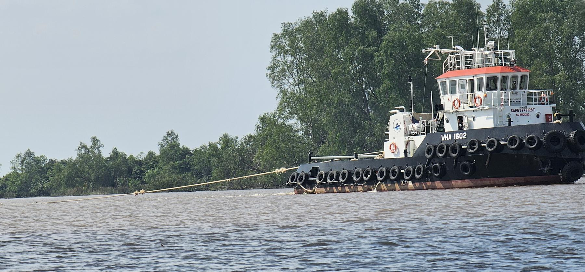

Certificates[Date]
HSSC safety certificate renewal across the fleet
[Summarise the renewal of hull, radio, and equipment safety certificates.]
The six news cards below are templates, not actual events. Replace the headline, date, and body with real events before the site goes live.
News
Gallery
Photographs taken on location, not stock imagery.